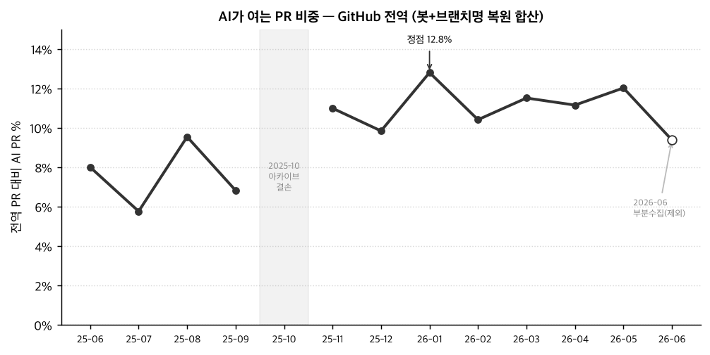
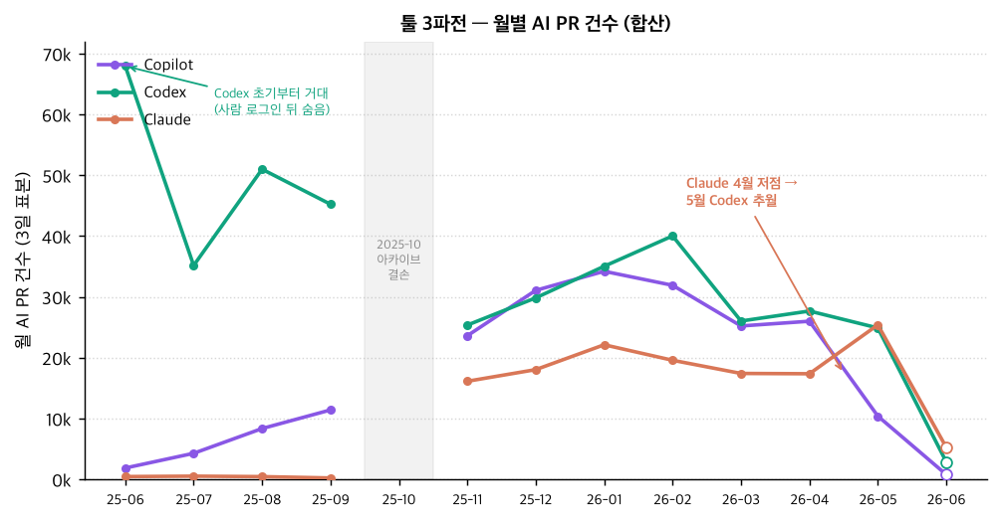
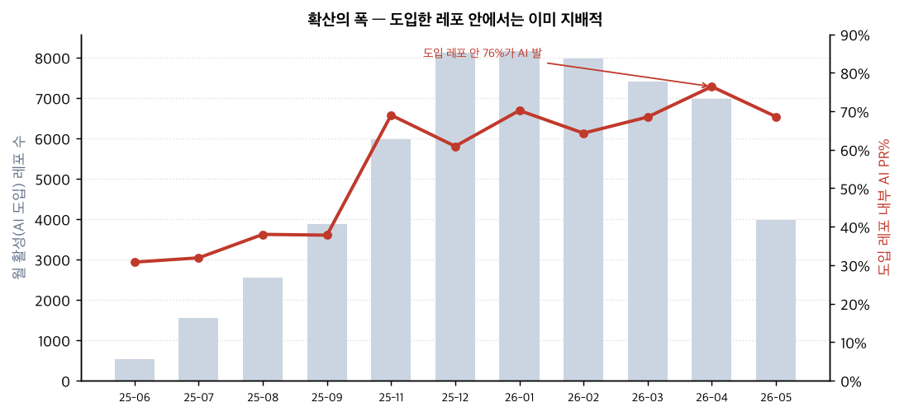
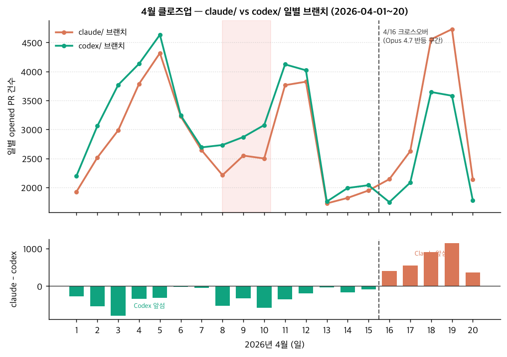

GitHub 전수 PR 이벤트에서 AI 에이전트의 흔적을 추적 — 직감과 반박을 거치며 서사와 방법이 뒤집힌 실제 기록
GH Archive의 전 세계 PR 이벤트에서 AI 코딩 에이전트(Codex·Copilot·Claude Code·Cursor·Devin·Jules)의 흔적을 추적.
처음의 계측기는 “자기 봇 계정으로 직접 연 PR”(actor.login = Copilot, Codex, claude[bot]…).
이걸로 그린 첫 그림은 “AI PR 비중 0.15% → 5%, 30배 폭발”이었다. — 그런데 이게 함정이었다.
각 행은 “사람이 던진 방향/직감 → 왜 중요한 쟁점인지 → 실행이 데이터로 한 대응 → 남은 교훈”.
| # | 방향·직감 (사람) | 쟁점 · 왜 중요한가 | 대응 (실행 + 데이터) | 교훈 |
|---|---|---|---|---|
| 1 | “봇 계정만 세면 진짜 규모가 안 잡히는 거 아냐?”계측 대상 의심 — 핵심 전환 | 2025-11부터 GH Archive가 PR 텍스트(제목·본문·diff)를 통째로 지웠고, Codex·Claude Code는 사람 로그인으로 PR을 연다 → 봇 집계에선 거의 0. “30배 폭발”은 계측기의 착시일 수 있음. | 브랜치명(head.ref)은 100% 생존한다는 걸 발견. AI 툴은 codex/·claude/ 프리픽스를 박는다 → 사람 로그인 PR에 적용해 복원. 결과 봇전용의 2~3배: 전역 AI PR이 2025년 내내 이미 6~10%, 2026-01 12.8%. |
계측기가 서사를 만든다 |
| 2 | “그럼 ‘폭발’이란 말 자체가 틀린 거 아냐?”서사 재검 | 복원해 보니 Codex는 처음부터 거대했다 — 봇을 안 써서 안 보였을 뿐. “무(無)에서 폭발”이라는 프레임이 사실과 어긋남. | 2025-06 codex/ 브랜치만 6.8만 건 확인 → 이전 본문 기반 “6월 Codex 등장 9.3%”와 독립 신호가 일치(교차검증). 서사 개정: “폭발”이 아니라 기존 거인(Codex) 위에 연말 Copilot 봇·Claude Code가 합류한 스텝업. |
서사도 데이터로 교정 |
| 3 | “연말에 확 뜬 느낌 있었는데, 12월 맞아?”직감 검증 요청 | “12월 폭발” 체감이 실제 데이터의 변곡점과 맞는지 확인해야 서사가 단단해짐. | 월별 급증 분해: 12월이 절대량 기준 단일월 최대 증가(+1만 건), 1월이 정점. 직감과 일치 — 단 이륙 자체는 10~11월(10월 결손에 분기점 가림). | 직감을 수치로 못 박기 |
| 4 | “업계에선 Claude에서 Codex로 옮겨간다던데?”통설 대입 | 널리 회자되는 이동설이 데이터에 보이는지 — 안 보이면 왜 안 보이는지(계측 사각지대)까지 밝혀야 함. | 봇 계정으론 확인 불가(둘 다 사람 로그인 → 사각지대). 브랜치명으로 복원하면 오히려 반대: 2026-05 Claude(25,390)가 Codex(24,875)를 추월. 통설과 방향이 어긋남. | 통설도 계측으로 검증 |
| 5 | “6월 데이터가 이상해. 부분수집된 거 아냐?”결손 의심 | “우리 파이프라인 버그냐, 상류 문제냐, 진짜 감소냐”를 가르지 못하면 결론 전체가 흔들림. | 층별 규명: raw는 완전(Push·Create 정상, 일 ~370만 이벤트). PullRequestEvent 스트림만 ~2026-05-20부터 언더수집(정상 200k+/일 → 6월 ~35k). 우리 탓 아닌 상류. 5월은 유효, 6월만 제외. | 결손도 층별로 특정 |
| 6 | “근데 표에서 중간에 월이 왜 빠져 있어?”표 전제 점검 | 표만 보면 07·08·12·02·03이 없어 보임 → 독자가 “데이터가 구멍투성이”로 오해할 위험. | 마트 전체 시계열 재확인: 그 달들은 다 있고 표가 변곡점만 발췌한 것뿐. 진짜 결손은 2025-10 하나(아카이브 부분수집)+2026-06 partial. → 표를 그래프로 교체해 결손 구간을 시각적으로 명시. | 발췌 ≠ 결손 |
| 7 | “4월에 Claude 감소 눈에 띄지? 그때 성능 이슈 많았어 — 4/10경 뚝 떨어졌다 opus 4.7로 반등, 그 사이 Codex로 이동. 더 파봐줘.”현장 지식 + 딥다이브 요구 | 월별 한 점(4월 표본=9·10·11일)은 마침 사건 위에 얹혀 있어 오해하기 쉬움. 인과 서사를 검증하려면 일 단위 해상도가 필요. | 먼저 비용 규율: 이번 달 무료구간(1TiB) 초과 확인(실지출 ~$4.5) → 범위를 사람이 선택(좁게 4/1~20, +$0.41). 일 단위 스캔 결과: 4/1~15 내내 Codex 우위 → 4/16 크로스오버 → Claude가 추월 유지(Opus 4.7 출시와 맞물림). Claude 점유 31~34%→41~42%. | 스캔 전 비용 확인 · 결정은 사람 |
| 8 | “그럼 이 순위가 곧 성능 순위야?”해석 남용 경계 | Copilot이 80~95%로 1등이라고 “제일 좋은 모델”로 읽으면 결론이 왜곡됨. | 사용량≠성능임을 명시: ① Copilot 1등=유통망(GitHub 내장) ② Codex·Claude=사람 로그인 뒤 숨은 거인 ③ 오픈웨이트(Kimi·GLM·Qwen)는 OSS 하네스에 끼워져 유저 이름 커밋 → 통째 사각지대. 이 분석은 “자기 정체성으로 활동하는 수직통합 상용 제품”만 잼. | 사용량 ≠ 성능, 편향 명시 |
| 월 | 봇 계정만 | +브랜치명 복원(합산) | 배수 |
|---|---|---|---|
| 2025-06 | 0.15% | 8.0% | 53× |
| 2025-11 | 3.87% | 10.99% | 2.8× |
| 2026-01 (정점) | 5.17% | 12.8% | 2.5× |
| 2026-05 | 2.31% | 12.02% | 5.2× |
봇 계정만 세면 “0.15%→5% 30배 폭발”, 브랜치명까지 복원하면 “2025년 내내 이미 6~13%”. 같은 데이터, 다른 계측기.
티키타카를 거쳐 도달한 그림 4장. (표를 대체해 최종 보고서에도 임베드)

2025년 내내 6~10%, 2026-01 정점 12.8%. 회색=2025-10 결손, 속 빈 점=2026-06 부분수집(제외).

Codex는 2025-06부터 거대. 연말 Copilot·Claude 합류로 삼분. Claude 4월 저점→5월 Codex 추월.

전역 3~5%는 희석값. AI를 도입한 레포 안에서는 전체 PR의 60~77%가 에이전트 발.

4/1~15 Codex 우위(하단 초록) → 4/16 부호 전환 → Claude 추월 유지(주황). Opus 4.7 반등과 맞물림.
무엇을 세느냐가 결론을 만든다. 봇 계정 vs 브랜치명에 따라 “30배 폭발”이 “원래 거대”로 뒤집힌다.
브랜치명 복원과 본문 시그니처가 “6월 Codex 등장”에서 독립적으로 일치 → 노이즈 아님.
“6월 이상”을 raw/스트림/전환으로 분해 → PR 이벤트만 상류 언더수집, 우리 파이프라인 무결.
표에 안 보인다고 데이터가 없는 게 아니다. 진짜 구멍(2025-10)만 그래프에 명시.
큰 그림(크로스오버)은 확인하되 “4/10 절벽”·“개별 이동”은 데이터가 지지하는 만큼만.
무료구간 초과를 먼저 재고, 범위 선택은 사람에게. payload 스캔은 진짜 돈이 붙는다.
1등은 유통망일 수 있고, 거인은 숨어 있고, 오픈웨이트는 사각지대. 순위를 역량으로 읽지 말 것.
20260712_github-ai-trends.md — 합산 트렌드·확산·툴 지형·4월 딥다이브(3.5절)·판도 해석·결손 구간. 표를 그래프 4종으로 교체.
reports/img/*.png — AI% 추세·툴 3파전·도입 깊이·4월 일별 클로즈오버. 결손·부분수집 구간을 시각적으로 명시.
정본 뷰 ai_pr_metrics_monthly(합산 AI%·봇전용 하한·툴6종·도입폭·data_quality 동적 플래그) → 대시보드 자동 반영. 월 갱신 refresh_mart.sh.
본문 삭제(2025-11) 이후에도 head.ref 프리픽스로 사람 로그인 뒤 숨은 Codex·Claude를 추적하는 재사용 가능한 방법론.